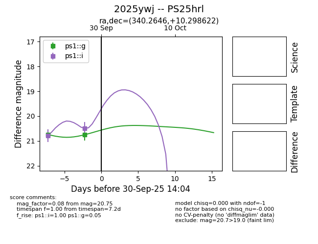
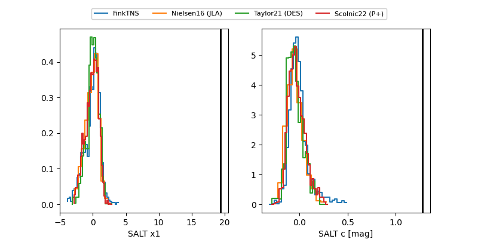

TNS: 2025ywj
YSE: 2025ywj
2025ywj (yse,tns)
PS25hrl (panstarrs)
equatorial (ra, dec) = (340.2646,+10.29862)
galactic (l, b) = (78.3116,-41.01184)


last ps1::g=20.75, ps1::i=20.49
2 ps1::g, 2 ps1::i detections